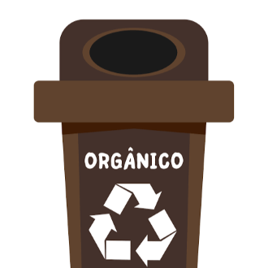

-
Papel
Descrição
O recipiente de cor azul é destinado à coleta de papel e papelão. Nele, devem ser descartados jornais, revistas, embalagens de papelão, caixas e outros materiais similares.
-
Plástico
Descrição
O recipiente vermelho é utilizado para o descarte de plásticos. Garrafas PET, embalagens plásticas, sacolas, potes e tampas são alguns exemplos de materiais que devem ser colocados nesse recipiente.
-
Vidro
Descrição
O vidro deve ser descartado nos recipientes verdes. Garrafas, potes e frascos de vidro podem ser reciclados e transformados em novos produtos.
-
Metal
Descrição
O recipiente amarelo é destinado aos metais. Latas de alumínio, latas de aço, tampas metálicas e outros objetos feitos de metal devem ser descartados nesse recipiente.
-
Orgânico
Descrição
Os resíduos orgânicos, como restos de alimentos, cascas de frutas e legumes, podas de plantas e outros materiais biodegradáveis, devem ser depositados em recipientes de cor marrom.